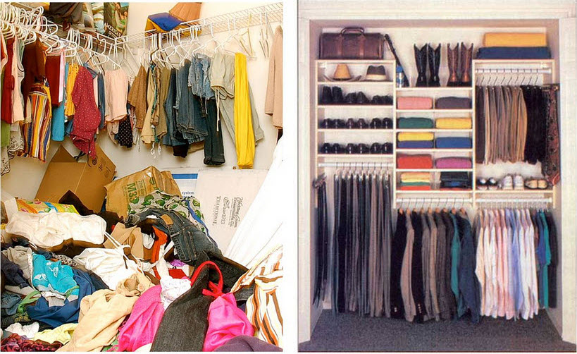
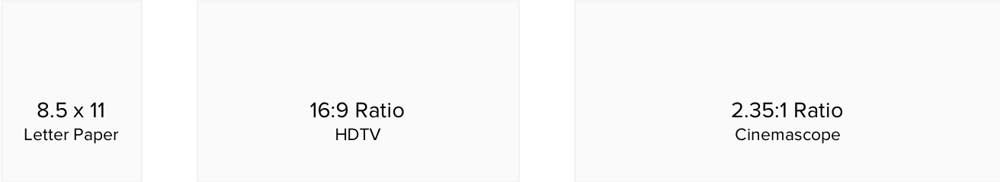
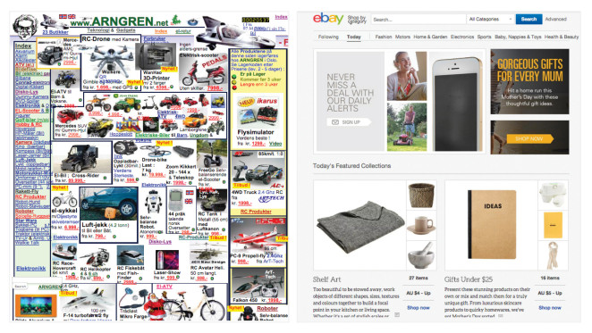
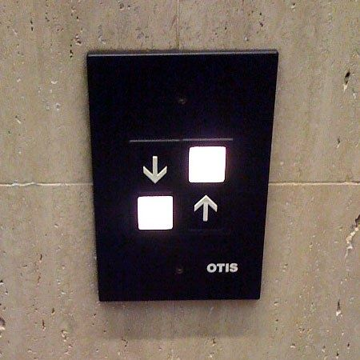

Composition & Organization
How do you organize your things? Some people have elaborate systems. Others just throw things around, yet still know where everything is. And others do something in between the two extremes.

Personal methods of organization vary from person to person.
But, when it comes to design, you must be aware that you're creating something for other people. Thus, there are certain rules of composition and organization.
These rules will help you compose designs that are not only more understandable, but also more appealing. They help you create a good structure without restricting your creativity.
The rules will help you answer questions like:
- Where should you place items in a design?
- How big should each item be?
- How much space should you use to separate items?
Decisions regarding space, size, and placement of the components within your design shouldn't be random. Rather, you should create structured systems. Let's analyze several of the systems you should create.
The Canvas
The first composition choice you make is determining the ratio and size of your canvas.
Your canvas refers to the container that will hold your design. This can be a piece of paper, a screen, or a postcard. Many times, your canvas will be dictated by the medium.
For example, if you're creating a resume, the canvas will be the sheet of paper (8.5 x 11 inches). If you're creating a slide, it will likes be a rectangle with a 16:9 ratio.
Purely digital designs mean you can set your own custom canvas size. Whatever size you choose will influence the rest of the composition choices you make, as well as how your design is perceived.
Below are some common canvas sizes:

Alignment
Aligning objects relative to each other creates structure and harmony within your design.
One way to do this is to use a grid system (though many tools, including PowerPoint, have built in alignment tools).
A good way to think of this is with a grid. Remember graph paper in your high school math class. Many websites also use grid layouts. Aligning objects creates organization with lines. You can have organized columns. Breaking alignment can draw attention. But do it too much - and you get a cluttered mess. As with all contrast factors, you need consistency.
Compare the two design below. Notice how one design has individual components randomly placed, while the others has everything aligned.

Proximity + Grouping
Placing items closer together make them seem related. This is the concept of grouping. Below is an example of poor grouping. All of the button on the elevator are close together. So which button is which?

It's hard to tell, isn't it? There are a couple of potential fixes here. First, we could have both buttons on one side and the labels on the other. Alternatively, adding space either horizontally or vertically would also solve the issue.
Proportion
Proportion is probably the most important aspect of composition. Proportion refers to the different size relationships within a design.
The sizes of objects, as well as the amount of space in between objects should be purposeful. They should be based on a replicable system.
We have proportional systems in many other areas of our lives besides design. For instance, we have preset measurements for recipes such as the 1/8, 1/4, 1/2, and 1 tsp divisions. We also have rulers divided up into standard units of measure with the smallest measurement being 1/16th of an inch. Or consider a piano, which has keys that have equal divisions of pitch/frequency.
Rather than using random sizes, spaces, and divisions, you need to have a similarly structured system. So how do you create this system?
The most basic way is to create a set list of sizes and use them consistently throughout the design.
The simplest proportion is dividing things in half - a.k.a centering. This results in perfect symmetry.
Asymmetrical designs also work and can catch the eye. For example, lets consider a three-column brochure. It would look weird to have random column widths. One way to divide it proportionally would be to divide it into three equal parts.
A more sophisticated example would be a website. Websites in the past were usually divided up into 6 or 12 equal columns. These 12 columns could be divided up into sidebars and main content sections. The content sections may take up 8 of the 12 columns. But none on the sections take up half-columns. This keeps the website looking proportional.
Proportion goes beyond the overall layout of a design. The space between a heading and a paragraph should be equal to the height of the heading. The font sizes you use should be based on a proportional system.
Many designers use preset proportions based on common ratios such as the golden ratio or a 3:4 ratio. Using such presets can help you make good designs without stressing about math.
Conclusion
Composition & Organization is the hardest principle to master because there is so much that goes into it. All objects within a design should be proportional. They should also be aligned to each other. Beyond that, related objects should be grouped together. There is only one more pice to the puzzle that is missing: White Space. This is an extremely important concept and has its own dedicated module.